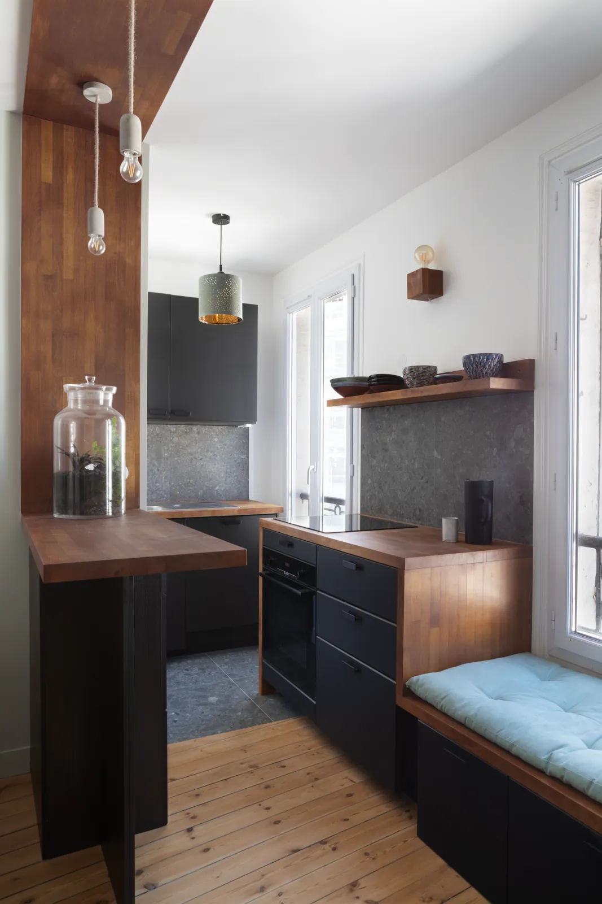
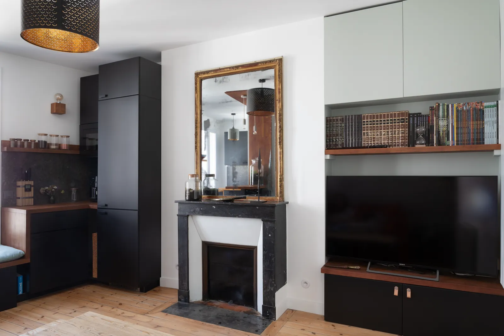
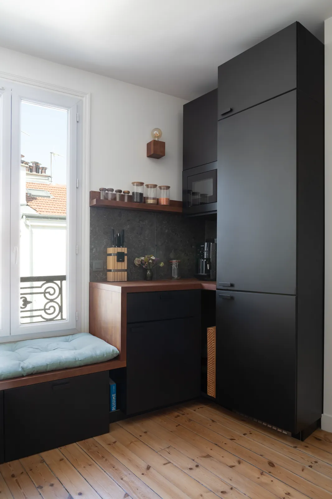
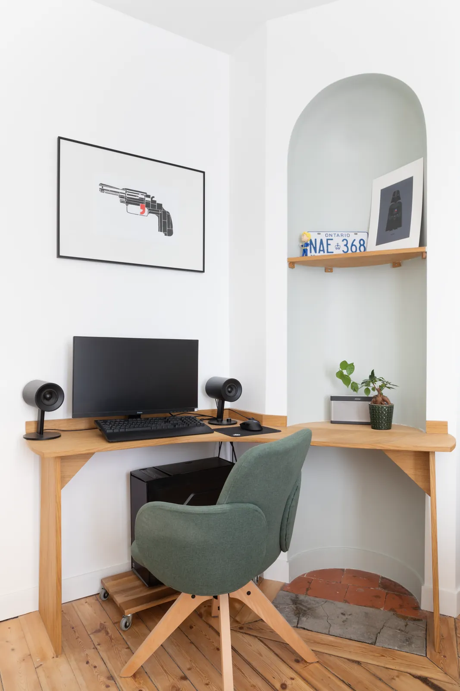
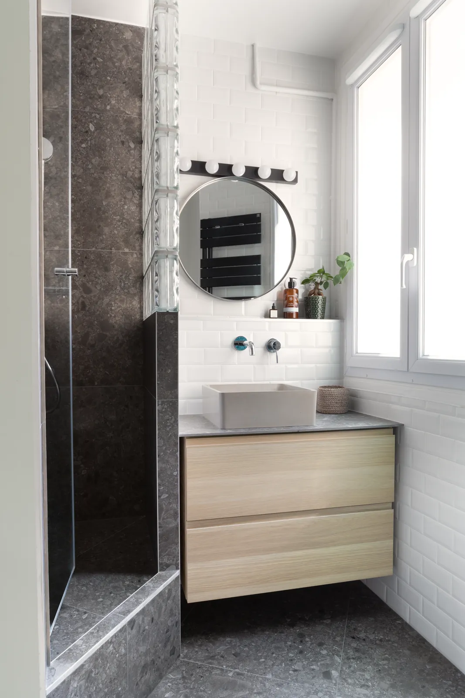

Stouls Studio / Portfolio / Appartement, Boulogne-Billancourt
Appartement, Boulogne-Billancourt
Façades noires, bois chaud et vieux parquet en pin dans un appartement aux portes de Paris.
- Type
- Rénovation d'appartement
- Lieu
- Boulogne-Billancourt, à l'ouest de Paris
- Intervention du studio
- Cuisine, salle de bain et menuiseries sur mesure
La cuisine est ouverte sur le séjour et dessinée comme un seul meuble avec lui : façades noir mat, plans de travail en bois massif chaud, crédence et sol en pierre sombre mouchetée. Le bois monte le long du mur et traverse le plafond au-dessus du bar, puis redescend en banquette sous la fenêtre, avec des tiroirs en dessous et un coussin au-dessus.
Le séjour garde ce qui était là : le parquet en pin à larges lames, la cheminée en marbre noir et son miroir doré. À côté de la cheminée, des placards vert pâle et une étagère en bois encadrent la télévision, au-dessus d'un meuble bas noir à poignées de cuir.
Un bureau en bois clair occupe une alcôve à côté d'une niche en arche peinte du même vert pâle. Dans la salle de bain, la douche est habillée de la pierre sombre de la cuisine et abritée par des pavés de verre, face à un carrelage blanc biseauté, un miroir rond et un meuble vasque en bois clair.





Un projet comme celui-ci
Si ce projet ressemble à ce que vous avez en tête, dites-le à Margaux. Un lien vers cette page et deux lignes sur votre budget et votre calendrier suffisent pour commencer.
Précédent : Appartement, Levallois-Perret IISuivant : Maison de campagne, Bourgogne